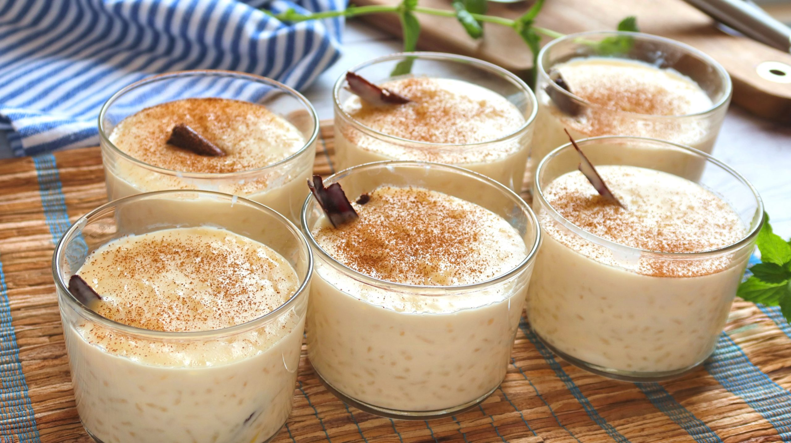
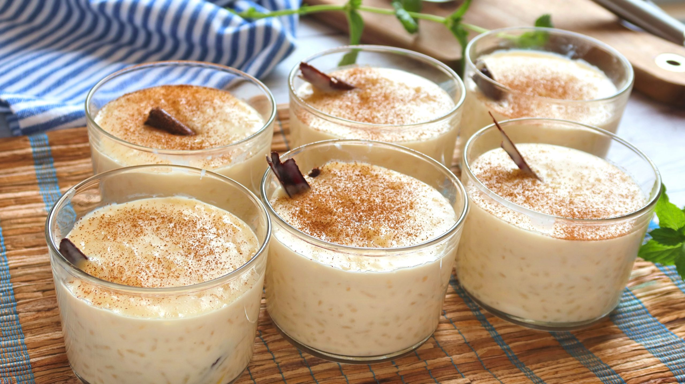

Colombian food can consist of many dishes such as La Bandeja paisa which can include beans, rice, egg, avocados, plantains, chicarron, and arepas. Another popular Colombian Food is Arepas rellenas that have things inside it such as cheese, chicken, or beef.
More Foods
 
